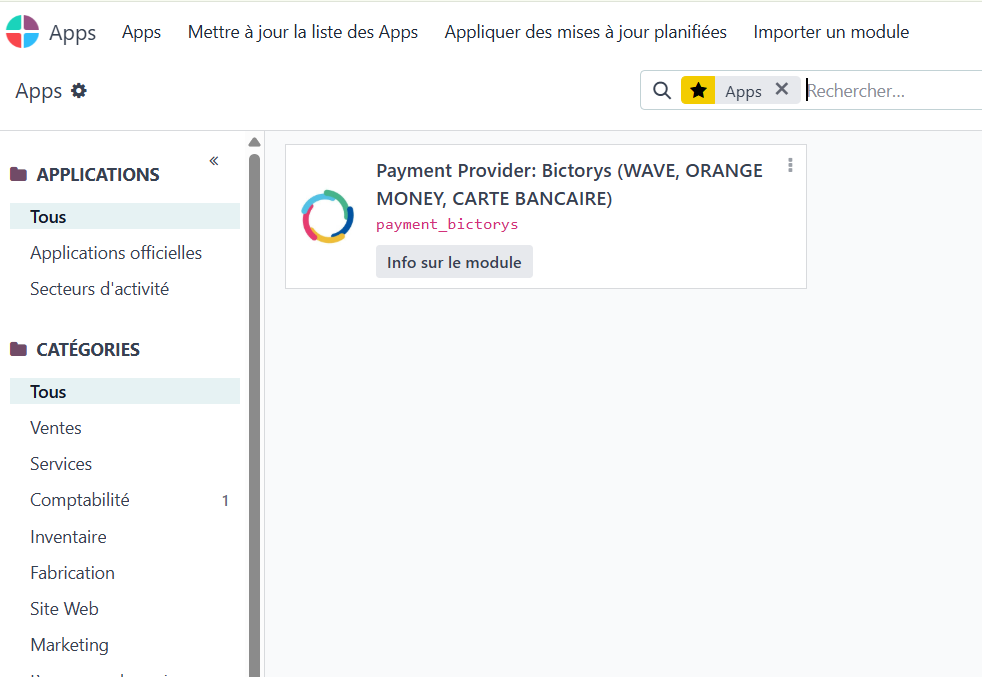
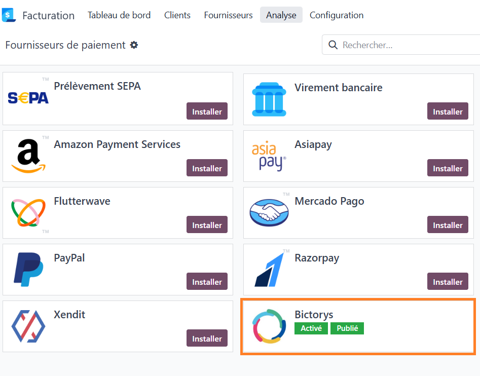
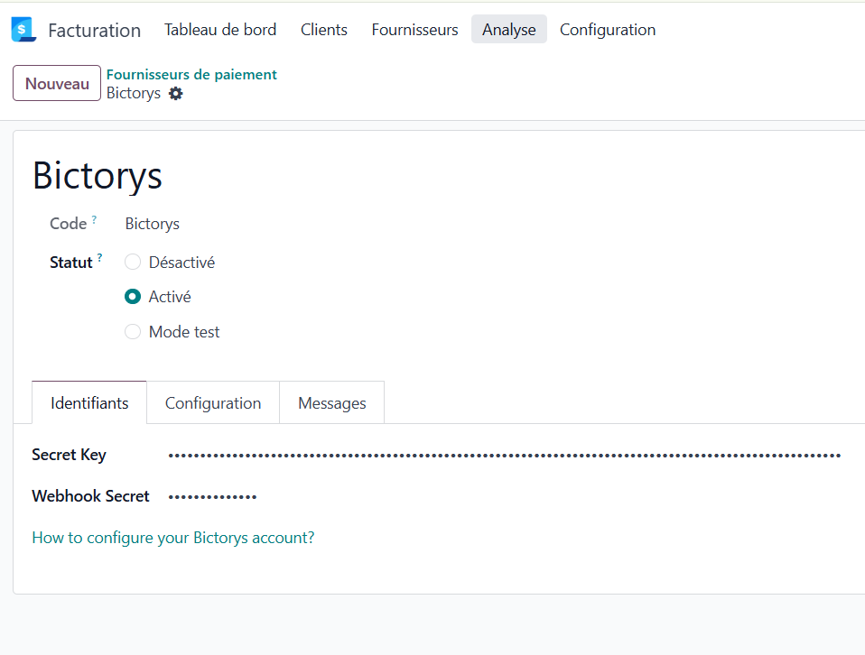
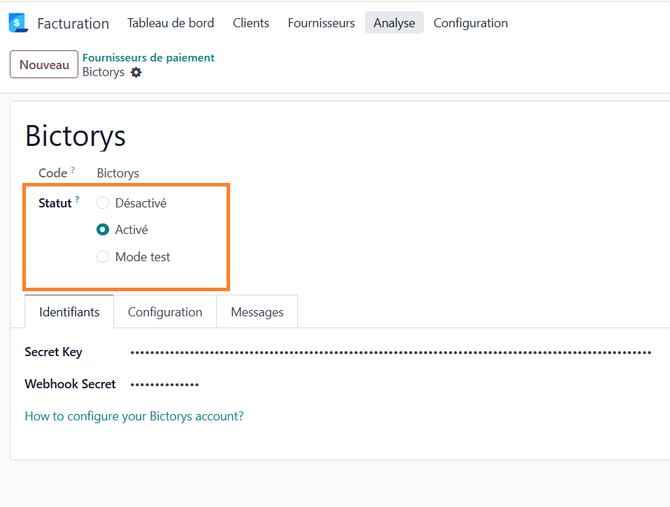
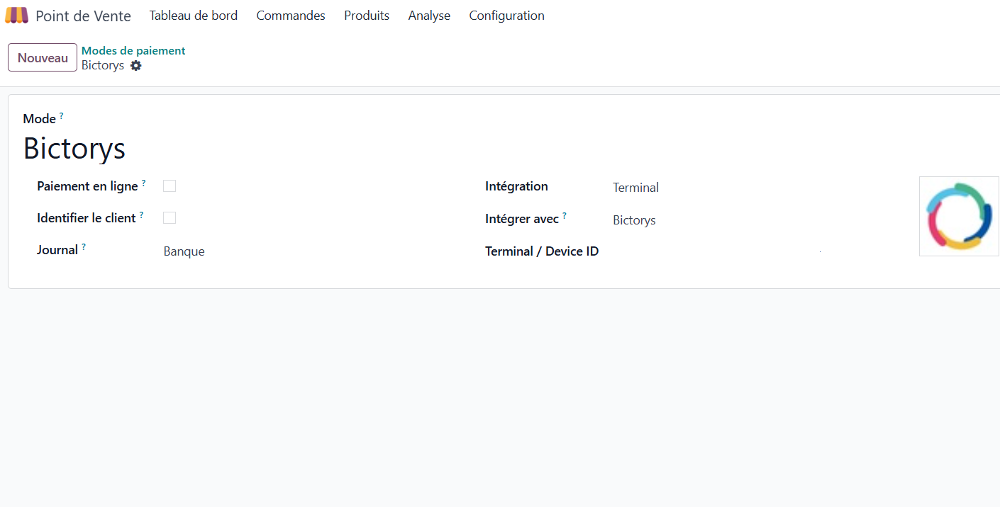
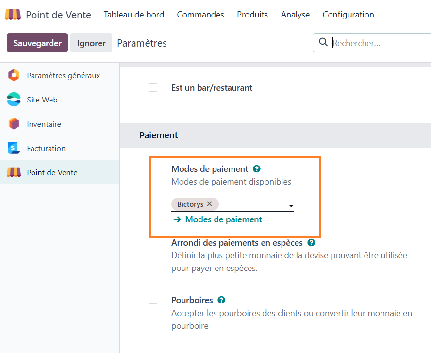

Qu'est-ce que Bictorys ?
Bictorys est un intermédiaire de paiement africain qui permet d'accepter les paiements mobiles et par carte via une seule intégration.
Moyens de paiement acceptés
Le client choisit son moyen de paiement préféré. Bictorys traite la transaction et crédite votre compte marchand.
Deux modes d'utilisation
Ce module active Bictorys dans deux contextes distincts d'Odoo :
Prérequis
Avant de commencer, assurez-vous d'avoir les éléments suivants à disposition.
| Élément | Description |
|---|---|
| Compte Bictorys requis | Un compte marchand actif sur bictorys.com (test ou production). |
| Secret Key requis | Clé secrète API disponible dans votre tableau de bord Bictorys. |
| Webhook Secret requis | Secret de validation des webhooks entrants, à définir dans votre espace Bictorys. |
| Odoo 18.0 | Modules dépendants : payment, point_of_sale. |
| Device ID | Identifiant UUID du terminal Bictorys. Requis uniquement pour le Point de Vente. |
Installation du module
Le module payment_bictorys s'installe comme tout module Odoo standard.
Copier le module dans les addons
Placez le dossier payment_bictorys dans votre répertoire d'addons Odoo, puis redémarrez le serveur ou mettez à jour la liste des modules.
Activer le mode développeur
Allez dans Paramètres › À propos › Activer le mode développeur pour voir tous les modules disponibles.
Installer le module
Dans Paramètres › Applications, recherchez Bictorys et cliquez sur Installer.

Paiement en ligne (Web)
Permet à vos clients de payer en ligne via Wave, Orange Money ou carte bancaire — depuis une facture, le portail client ou votre boutique e-commerce.
Accéder aux fournisseurs de paiement
Allez dans Comptabilité › Configuration › Fournisseurs de paiement et sélectionnez Bictorys.

Renseigner les identifiants API
Dans l'onglet Identifiants, renseignez votre Secret Key et votre Webhook Secret obtenus depuis votre tableau de bord bictorys.com.
| Champ | Description |
|---|---|
| Secret Key requis | Clé secrète fournie par Bictorys. Disponible dans votre dashboard marchand. |
| Webhook Secret requis | Secret pour valider l'authenticité des notifications entrantes de Bictorys. |
| État | Test pour les tests sans vrai paiement, Activé pour la production. |

Activer et publier
Passez l'état sur Activé (ou Test) et cochez Publié pour que Bictorys apparaisse comme option de paiement sur le portail client et le site e-commerce.

https://api.test.bictorys.com est utilisée. En Activé, l'URL bascule automatiquement vers https://api.bictorys.com.Configuration des Webhooks
Les webhooks permettent à Bictorys de notifier Odoo en temps réel après chaque paiement. Ces URLs sont à enregistrer dans votre tableau de bord Bictorys.
URLs à enregistrer sur la plateforme Bictorys
votre-domaine.odoo.com par l'URL réelle de votre Odoo. Sur Odoo.sh : l'URL de votre branche de production.Point de Vente (Terminal)
En caisse, la commande est envoyée au terminal Bictorys. Le client paie via Wave, Orange Money ou carte depuis son téléphone. Odoo est notifié par webhook dès la confirmation.
Créer une méthode de paiement
Allez dans Point de Vente › Configuration › Méthodes de paiement et cliquez sur Nouveau.
Configurer le terminal Bictorys
Renseignez les trois champs obligatoires :
| Champ | Valeur |
|---|---|
| Nom requis | Ex : Bictorys ou Wave / Orange Money |
| Terminal de paiement requis | Sélectionner Bictorys dans la liste déroulante. |
| Terminal / Device ID requis | UUID du terminal fourni dans votre dashboard Bictorys (ex : 92b70387-c87b-4c8d-...) |

Ajouter la méthode à la caisse
Dans Point de Vente › Configuration › Paramètres, section Paiement, ajoutez la méthode Bictorys à votre caisse.

Vérifier le fournisseur (Secret Key)
Le terminal POS utilise la Secret Key du fournisseur Bictorys pour créer la commande sur l'API. Assurez-vous qu'il est en état Test ou Activé avec la clé renseignée. Il n'est pas nécessaire de le publier sur le site web pour n'utiliser que le POS.
Flux de paiement
Vue d'ensemble du déroulement d'un paiement selon le canal.